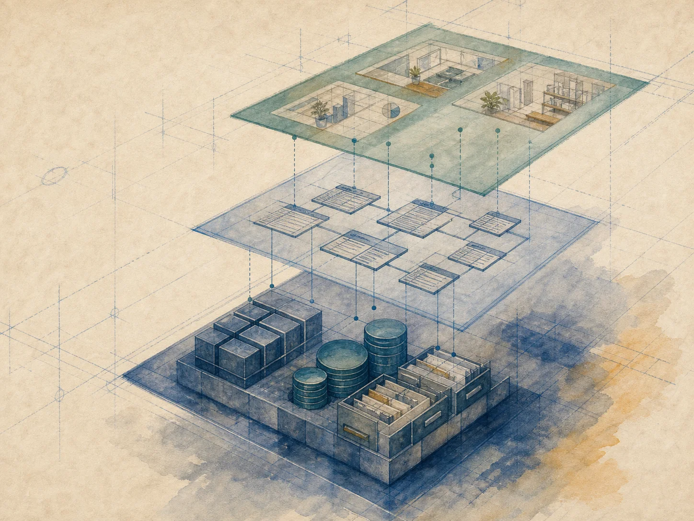
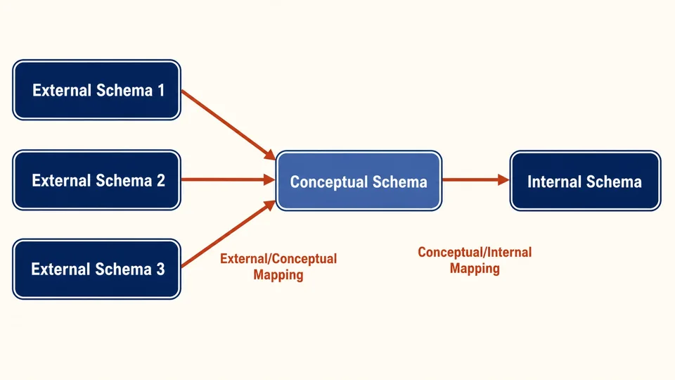

型 Type
说明一类数据具有怎样的结构和属性

模式、映像与视图
 VER. 2608.1
Built with impress.js
VER. 2608.1
Built with impress.js
三级模式和两级映像可以给数据库解耦
型规定可以怎样表示，值说明实际内容
| 结构描述（型） | 一次具体赋值（值） |
|---|---|
| 学生（学号、姓名、性别、生日） | （20180003、王敏、女、2001-08-01） |
说明一类数据具有怎样的结构和属性
给某一类数据的一次具体赋值
“型-值”、“模式-实例”都体现了“结构-状态”的区别
可以类比于 Java 语言的“类”和“对象”
模式相对稳定，实例会随数据库更新而变化
描述数据库中全体数据的逻辑结构、联系以及安全性与完整性要求
例如，模式规定 Student、Course 等关系的结构、联系与约束
是模式的一个具体值，它是数据库在某一时刻的数据状态
例如，2026 年秋季的学生、课程和选课记录是一个实例，它会变化
模式相对稳定，实例随更新变化
看数据库的结构描述有没有改变
| 变化情境 | 判断 | 需要检查什么 |
|---|---|---|
| 新增一条选课记录 | 实例更新 | 模式和映像不变 |
| 修改一名学生的成绩 | 实例更新 | 模式和映像不变 |
| 全局模式新增培养方案关系 | 模式修改 | 检查相关外模式/模式映像 |
| 全局模式新增一个属性 | 模式修改 | 检查相关外模式/模式映像 |
同一个模式可以有许多不同实例；实例更新不等于模式修改
外模式面向用户，模式组织全局逻辑结构，内模式描述物理存储

外模式 → 外模式/模式映像 → 模式 → 模式/内模式映像 → 内模式
三级模式分别描述用户视图、全局逻辑结构和内部存储方式
模式把不同应用需要的数据组织成一个不依赖具体存储的全局逻辑整体
数据库中的关系 Student、Course、Teaching、Enrollment 是模式中的业务对象结构，不是四个模式
模式负责全局要求：数据结构、数据操作和数据完整性
全体数据的逻辑结构、联系和约束
不规定记录如何写入物理存储器
一个模式可以理解成一个数据库的型
面向具体用户和应用，描述局部数据的逻辑结构
学生看到自己的课表与成绩
教师看到所授教学班
教务处看到更完整的业务数据
在不同外模式中，同一数据可能有不同的名称、结构、类型、长度或保密级别
一个应用往往依据一个外模式工作
同一外模式也可以供多个应用使用
外模式可以缩小可见范围，有助于安全
描述记录、索引和物理页在数据库内部怎样组织
采用堆存储、顺序存储还是聚簇存储
采用 B+ 树索引还是哈希索引
记录是否压缩或加密，怎样安排物理页
内模式解决数据库内部如何组织和表示数据的问题
一个数据库只有一个内模式，用户不必直接管理存储细节
说明每一级模式描述什么、面向谁以及有多少个
| 层次 | 描述什么 | 面向谁 | 数量 |
|---|---|---|---|
| 外模式 | 局部数据的逻辑结构 | 用户与应用 | 多个 |
| 模式 | 全体数据的逻辑结构与联系 | 所有用户共享 | 一个 |
| 内模式 | 数据的物理结构与存储方式 | DBMS 与 DBA | 一个 |
“用户要看什么”，“整体逻辑是怎样的”，“怎样存储和管理”
外模式/模式映像连接外模式与模式；模式/内模式映像连接模式与内模式
每个外模式与全局逻辑结构的对应
模式变化时，原外模式尽量保持稳定
一个外模式对一个外模式/模式映像
定义全局逻辑结构与内部存储结构之间的对应关系
内模式变化时，让模式保持稳定
只要原外模式仍能表达原应用需求，原应用就可能继续工作
全局模式增加新关系：培养方案
维护外模式/模式映像，原学生课表外模式继续对应模式
原外模式仍只提供课表和成绩
原有程序不必因新增关系而重写
变化由映像吸收，而且没有改变原应用本身的业务需求
只要逻辑结构和应用需求不变，上层结构和应用就可以保持稳定
为成绩查询增加 B+ 树索引
更新模式/内模式映像，让逻辑模式继续对应新的物理组织
成绩查询的逻辑结构不变
程序仍通过原外模式提交同样查询需求
物理细节由 DBMS 管理
用户说明要做什么，数据库管理系统决定怎样找到和处理记录
先定位变化起点，再判断映像和稳定对象
| 情境 | 变化起点 | 调整位置 | 判断 |
|---|---|---|---|
| 新增一条选课记录 | 实例 | 数据本身 | 不是模式变化 |
| 增加成绩索引 | 内模式 | 模式/内模式映像 | 物理独立性 |
| 新增培养方案关系 | 模式 | 外模式/模式映像 | 逻辑独立性 |
| 增加课程完成度功能 | 外模式与应用 | 新功能与视图 | 业务变化，修改应用 |
数据库发生变化时，先分析哪些模式发生了变化
同一组调整中，模式变化、存储变化和业务需求变化需要分开判断
先找变化起点，再找需要调整的映像，最后确认哪些对象保持稳定
订单新增售后工单数据，但对顾客不可见
顾客仍然只需要原有订单摘要，顾客外模式和原应用保持不变
订单时间和用户编号增加联合索引
调整模式/内模式映像后，模式、外模式和应用不必改变
新增售后处理功能
新的业务需求，需要新的或修改后的外模式与应用；原有映像不能吸收这个变化
变化层次决定要检查的映像
模式描述结构，实例描述某时刻的状态
新增选课记录是实例变化为学生表添加一个新属性是模式变化，会影响所有实例
外模式面向用户，模式组织全局逻辑，内模式描述物理存储
数量关系是多个外模式、一个模式、一个内模式
映像能吸收不改变原应用需求的部分逻辑和存储变化
判断变化层次、要调整的映像和依然保持稳定的对象
三级模式分别描述不同关注点，两级映像吸收部分数据库变化